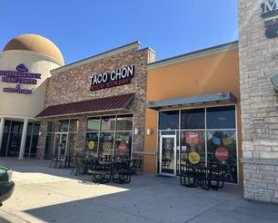

Street tacos, burritos, sopes, tostadas, tortas and elote at 5000 Western Center Blvd, Suite 290. Dine in, curbside or pick up.
| Mon | Closed |
| Tue–Sat | 10 AM – 8 PM |
| Sun | 10 AM – 5 PM |
per public listing; confirm with owner
5000 Western Center Blvd, Unit 290
Haltom City, TX 76137
Birria & menudo every weekend
Tue–Sat 10–8 · Sun 10–5 (from their Facebook intro)
